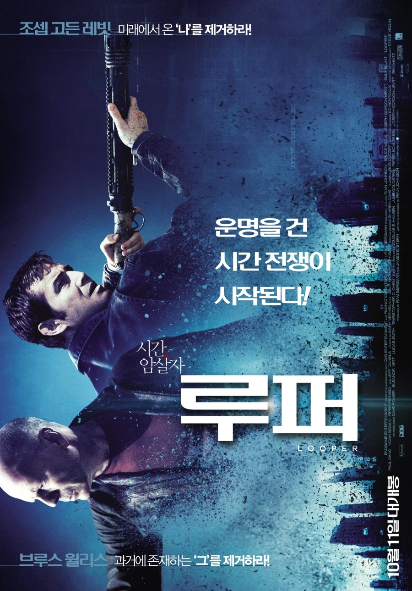

완벽한 증거 소멸과 시체 처리를 위해 미래의 조직들은 제거 대상들을 비밀리에 2044년에 활동하고 있는 ‘루퍼’라는 킬러들에게 보낸다. 어느 날, 완벽한 임무수행으로 최고의 자리를 지켜내고 있는 킬러 ‘조(조셉 고든 레빗)’의 앞에 새로운 타겟이 등장한다. 그는 바로 ‘레인메이커’에 의해 살해 당한 아내를 다시 살려내고자 과거로 돌아온 30년 후의 바로 자신(브루스 윌리스인)임을 알게 되는데… 미래의 나와 현재의 내가 만나는 순간, 피할 수 없는 시간 전쟁이 시작된다!